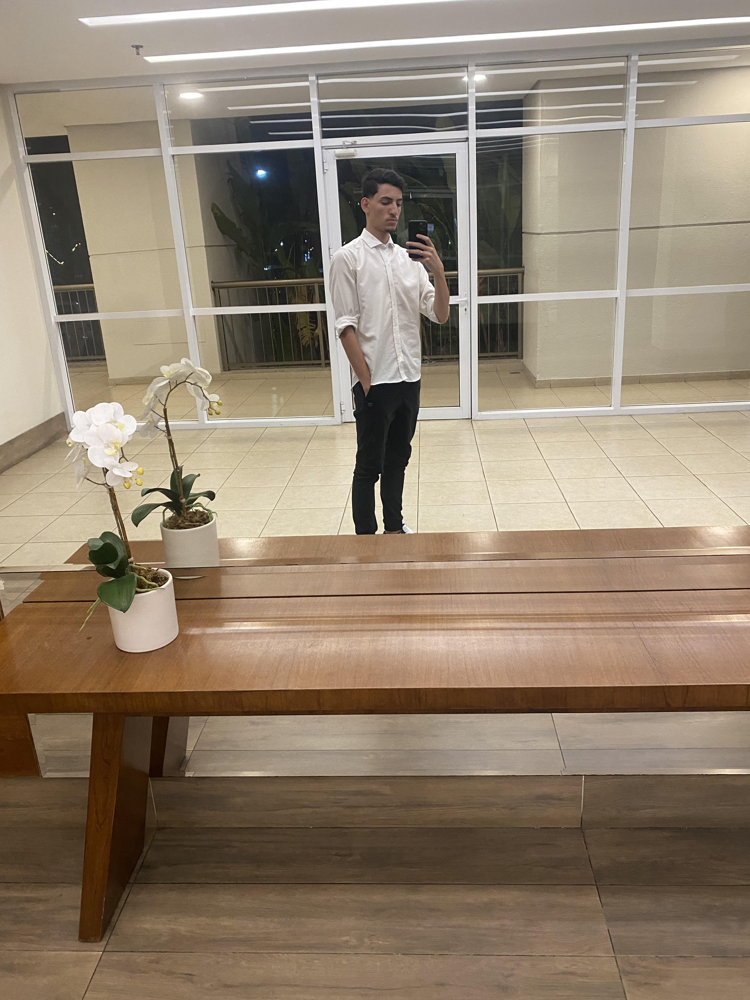

About Me
My name is Jane Doe and I'm a web developer from New York. I love creating responsive and interactive websites. In my free time, I enjoy hiking, reading, and exploring new cafes in the city.
My Favorite Books
- The Great Gatsby by F. Scott Fitzgerald
- To Kill a Mockingbird by Harper Lee
- 1984 by George Orwell
- Pride and Prejudice by Jane Austen